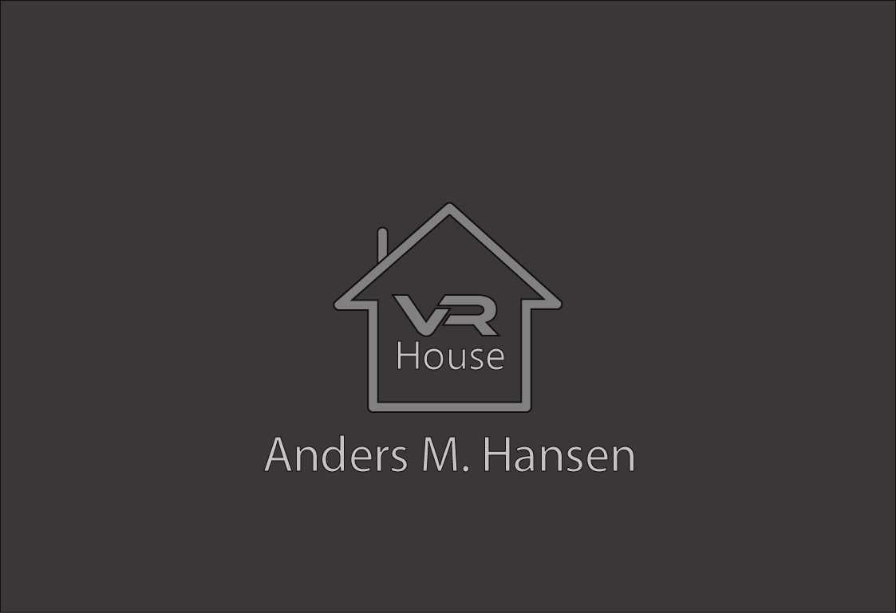
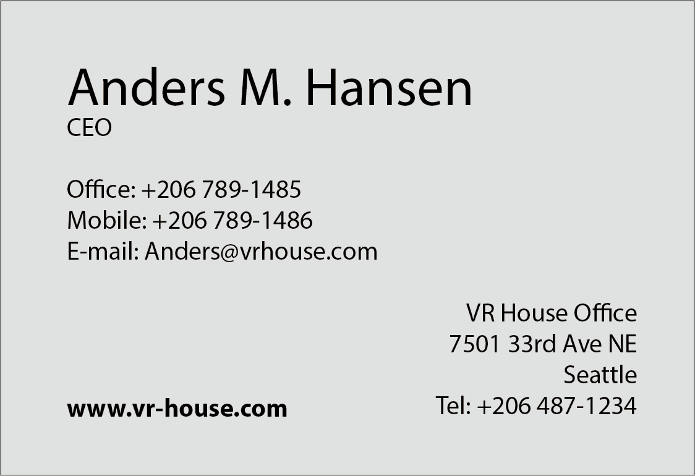

-
Visitkort [Kommunikation / IT - A niveau]
Vi fik til opgave at lave et visitkort, til et firma vi selv opdigtede.
Teori
Jeg har baseret mit visitkort ud fra opdigtet firma. Et firma som tager billeder af dit hus eller skole, som sættes op i Virtuel Reality. Så man kan se hele huset/skolen inde i Virtuel Reality. Jeg gik efter meget simpel design, hvor min forside kun indeholder logoet og firmaets navn, samt ejeren af firmaet. På den her måde undgår du ”støj” ved ens førstehåndsindtryk, da mit design er baseret på 2 sider. Jeg gik med den grå farve, udstråler viden og visdom. Vi opfatter grå som en klassisk og raffineret farve. Som også er det jeg ville ramme efter, et meget klassisk og simpel design. Det samme med bagsiden, den er lysegrå. Jeg har placeret logoet i midten, for at gøre det så simpel som muligt, så ser det også godt ud, meget stilet. Huset er for at signalere det har noget med huse at gøre, det her med at opleve dit eget hus i Virtuel Reality. Jeg har Highlightet mit navn, og hjemmesiden, fordi det fanger nemlig ens blik hurtigt, hvem står bag det her, og hvor kan jeg søge mere information om dette produkt/firma. Jeg brugte typografien ”Myriad Pro” som er en teksttype uden serifer, som giver det en lidt mere professionel design, mere simpel og stilet. Mit budskab er at informere folk om mit firma, give dem noget information om hvor de kan finde mere om det. Min modtager er dem som har kendskab til Virtuel Reality, og som måske har et firma som de gerne vil kunne vise frem til andre, ved hjælp af Virtuel Reality. Så man nødvendigvis ikke behøver at komme med ud på fabrikken, eller virksomheden. Jeg lavede test, som at spørge mine sidekammerater, om hvad de synes om designet. Der var lidt forskellige meninger om hvordan huset skulle se ud, og hvad farve det skulle have. Men til sidst blev de enige med mit design.
Billeder
Dette er forsiden af mit visitkort.
Her er bagsiden.
